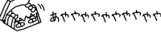

Translated document†
- This document has been translated to English from the original Japanese. For more information about the translation project, read about it at Translation info.
- The project is a work in progress, and some pages will still be in Japanese for now.
- Please report any issues or translation mistakes at the project's repository.
- Information on this version reflects the information on the original wiki as accurately as possible. If you want to make edits or changes to the information that are not related to translation, please do so on the original wiki.
Top news†
- We are currently working on making the description understandable even to non-programmers.
- If there is anything that is difficult to understand, please let us know in the "I don't understand this part" log.
What is this place?†
- This is a place to collect information and tips related to the SHIORI systems "YAYA" and "AYA".
- Anyone can edit it.
- If you are not familiar with editing, please try out various things at FrontPage/Practice.
- ← Please look at this menu also.
Distribution page†
Please visit the YAYA distribution page for downloads and updates.
Getting started guide†
References†
If you want to know everything in general, please start with the Manual.
System dictionaries and templates†
Tips†
Links†
Various other sources of information are available.
Banners†

{kind=link}
{kind=link}
{kind=link}